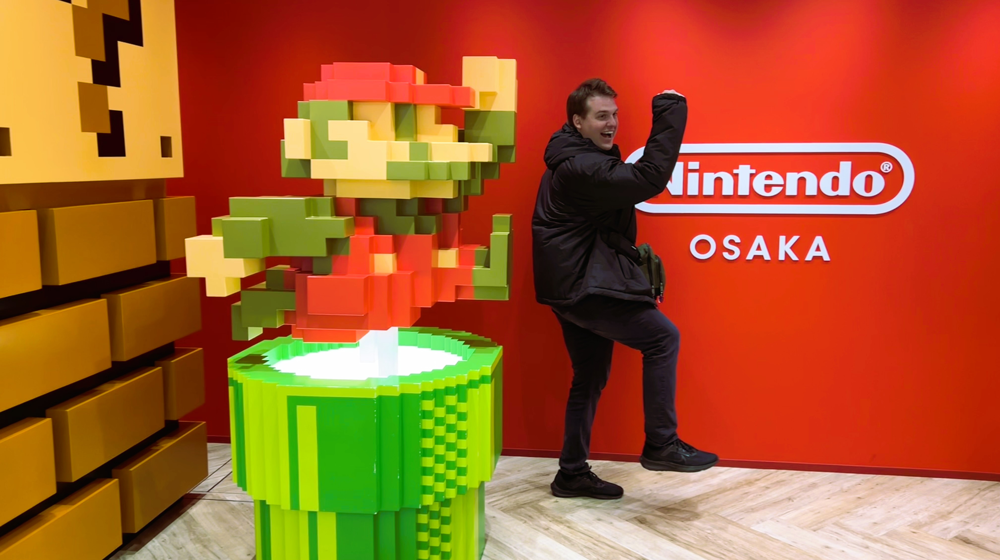

About
Jordan Martin
Unreal Engine Programmer based in Orlando, FL.

Background
Hi, my name is Jordan. I am a game programmer working at Iron Galaxy Studios with 5+ years of Unreal Engine experience. I started my career at FIEA, where I had the opportunity to become completely immersed in all areas of game development. Since then, I've been fortunate to help bring to life some amazing games and experiences.
I love to work on gameplay features that help craft the world and feel that players can get excited about. I am also up for new programming challenges in other domains, as it keeps me learning about our evolving technologies and processes.
I'm currently working on an unannounced third-person shooter and would love to connect about new opportunities!
Skills & Tools
Languages
C++
C#
Python
Tools & Platforms
Unreal Engine 4/5
Perforce
Visual Studio
Unreal Specializations
Blueprints
Replication
UMG
Unreal Insights
AI (Behavior Trees, EQS, Blackboard)
Practices
Technical Documentation
Cross-Discipline Collaboration
Code Reviews
Connect